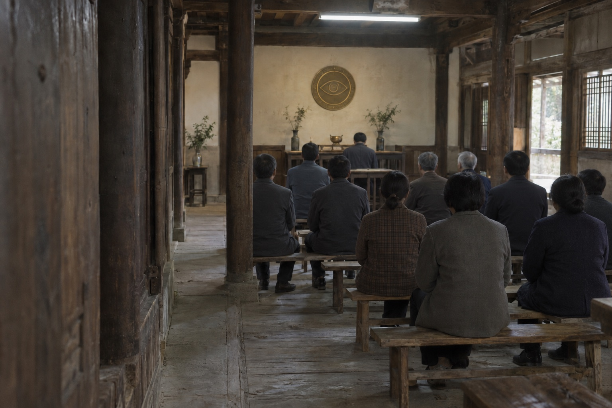

礼堂集会
查看活动相册 >>堂务消息
CHURCH NEWS八月祈愿簿公开摘录已更新 NEW
本次更新包含来愿原文、回访留记及同卷附页。原件未署日期者，按入簿日期编排；原署名与经手记录照录。
查阅祈愿簿 >>见证处旧卷整理及查阅说明
旧卷按原移交索引整理。追加说明另立附页，不覆盖原愿。公开卷可在祈愿簿查阅，署名隐去处沿用原件标注。
关于旧物归还与签收的通知
旧物交接由保管岗办理。归还物件时应保留原收讫凭据，附签与愿文的留存事项由见证处另行登记。
活动相册
PHOTO ALBUM


祈愿簿
PRAYER RECORDS